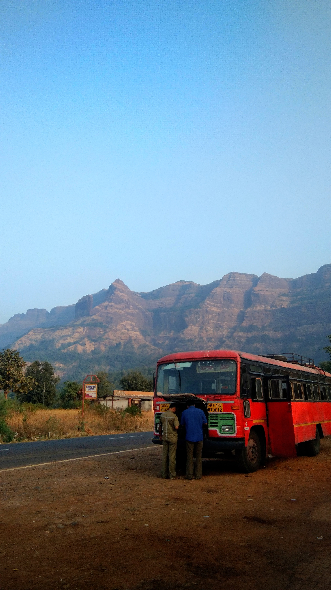
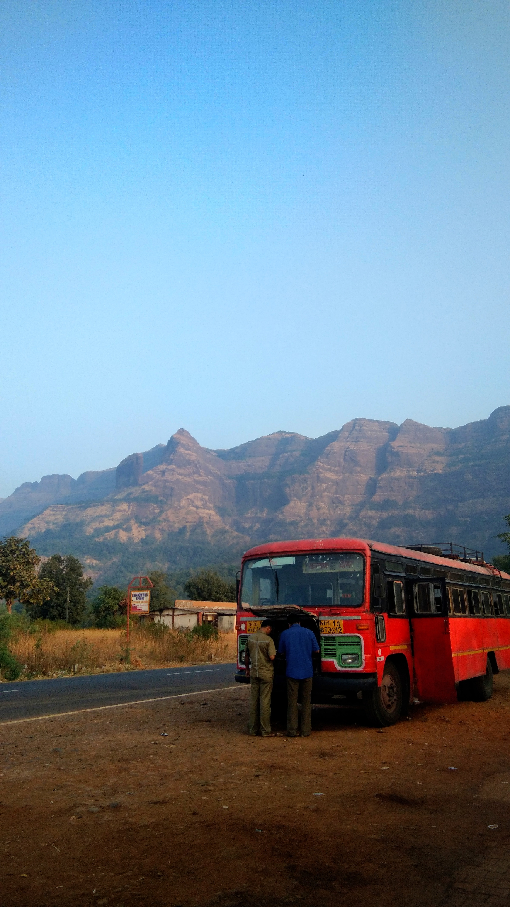

This photo is click portrate mode and that mode provide more classic pic...
This web site can be criate by akash matale. and this photography in base on akash matale photography. photography it is not only show 100 word it also attach emotionals and family spended time.This web site can be criate by akash matale. and this photography in base on akash matale photography. photography it is not only show 100 word it also attach emotionals and family spended time.This web site can be criate by akash matale. and this photography in base on akash matale photography. photography it is not only show 100 word it also attach emotionals and family spended time.This web site can be criate by akash matale. and this photography in base on akash matale photography. photography it is not only show 100 word it also attach emotionals and family spended time.
Akash Matale::This photo click by outdoor and randome click...
This web site can be criate by akash matale. and this photography in base on akash matale photography. photography it is not only show 100 word it also attach emotionals and family spended time.This web site can be criate by akash matale. and this photography in base on akash matale photography. photography it is not only show 100 word it also attach emotionals and family spended time.This web site can be criate by akash matale. and this photography in base on akash matale photography. photography it is not only show 100 word it also attach emotionals and family spended time.This web site can be criate by akash matale. and this photography in base on akash matale photography. photography it is not only show 100 word it also attach emotionals and family spended time.
Akash Matale:: For more
For more
This is click by akash matale photography and our team...
This web site can be criate by akash matale. and this photography in base on akash matale photography. photography it is not only show 100 word it also attach emotionals and family spended time.This web site can be criate by akash matale. and this photography in base on akash matale photography. photography it is not only show 100 word it also attach emotionals and family spended time.This web site can be criate by akash matale. and this photography in base on akash matale photography. photography it is not only show 100 word it also attach emotionals and family spended time.This web site can be criate by akash matale. and this photography in base on akash matale photography. photography it is not only show 100 word it also attach emotionals and family spended time.
Akash Matale::

 
